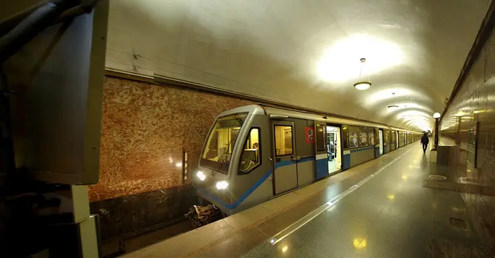

Фото: Svetlov Artem, CC0 · Wikimedia Commons
Станция метро · ВАО
Станция «Электрозаводская»
Свод зала усыпан 318 светильниками в круглых нишах, шесть рядов уходят в перспективу, на пилонах барельефы о труде. Станция 1944 года; снимать лучше поздно вечером.
- ₽ · до 1 500 ₽ на человека
- Новое в каталоге
Позвать сюда: Станция «Электрозаводская»Открыть в каталоге: Станция «Электрозаводская»Маршрут до места: Станция «Электрозаводская»
Адрес и детали
- Адрес
- Большая Семёновская ул., вход в метро «Электрозаводская» (Арбатско-Покровская линия)
Открыть на Яндекс Картах (в новой вкладке) - Метро
- м. Электрозаводская
- Округ
- Восток (ВАО)
- Цена
- до 1 500 ₽ на человека
- Часы работы
- пн–вс 05:30–01:00 · проверили в ноябре 2026
- Проверено
- работает — проверили в ноябре 2026
Похожие рядом
Что ещё рядом
Как позвать
- Выбери план, место или событие — в карточке адрес, цены и маршрут в Яндекс Картах.
- Нажми «Позвать сюда» — соберётся приглашение-игра для свидания или голосование для компании.
- Отправь ссылку в любой мессенджер: тебе ответят, а компания отметит, куда и когда может. Бесплатно и без регистрации.